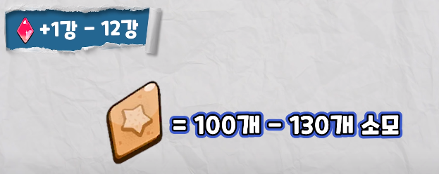
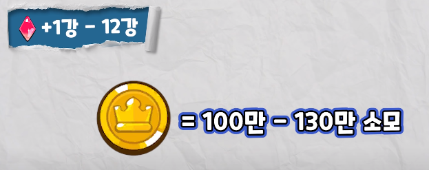
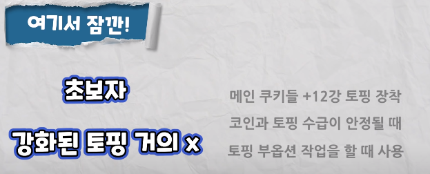

빨간 네모 박스들이 유효 옵션이다.
힐러랑 마들렌 한정으로 공속도 좋다.
하나의 토핑에서는 같은 종류의 부옵션이 뜨지 않고, 주옵션이랑 부옵션은 겹칠 수 있음.
그리고 부옵션이 얼핏보면 작은 수치 같지만 토핑5개를 한 부옵으로 밀어버리면 수치가 상당히 큼.
그래서 부옵션으로 챙길 수 있는 최대 스텟이 공증15%, 방증15%, 치확15%, 쿨감10%, 피감30% 이다.
에픽토핑 파밍후에 풀강을 다하게 되면

위 사진만큼 소모하기 때문에 원하는 부옵션을 가진 에픽 토핑을 가지기 힘들다.
따라서 6강까지만 강화후 첫번째 부옵션을 보고 선택하여 9강까지 강화를 하는게 좋다.

| 티어 | 옵션 | 비고 |
|---|---|---|
| 0티어 |
피해감소쿠키가 받는 데미지를 피해감소 %만큼 감소 |
- 아레나에서 얼마나 피해감소 수치를 높게 잘 맞추냐에 따라 승패가 갈림 - 피해감소 부옵션 수치는 1% ~ 6% - 피해감소 수치는 4%이상 추천 |
| 0.5티어 |
공격력쿠키의 공격 데미지를 증가 |
- 허브맛 쿠키와 같이 공격력이 증가할수록 힐 량을 증가시켜주는 경우도 있음 - 공격력 수치는 2%이상 추천 |
쿨타임쿠키의 스킬 사용 타이밍에 영향을 미치는 중요한 옵션 |
- 쿠키마다 쿨타임은 다르기 때문에 정해진 수치를 보고 맞추는게
좋음 - 쿨타임 수치는 1~2% 전부 유용하게 사용 가능 |
|
| 1티어 |
방어력쿠키의 피해를 줄여주는 옵션 |
-피해감소보다 좋지않은 옵션 |
치명타 확률쿠키의 치명타 확률을 높여주는 옵션 |
- 치명타가 뜰 경우 데미지가 150% - 허브맛 쿠키: 치명타가 뜰 경우 힐이 150% |
|
| 2티어 |
체력쿠키의 체력을 늘려주는 옵션 |
-에소맛 쿠키와 감초맛 쿠키와 같이 체력이 비슷한 쿠키에게 체력옵션을 부여해서 상대편 호밀맛쿠키의 공격 대상을 바꿀수 있음 |
| 3티어 |
치명타 피해감소상대의 공격에 치명타가 뜨면 피해를 일정 비율 줄여주는 옵션 |
- 치명타가 터져야만 옵션 호과가 있기 때문에 활용 가치가 낮음 |
이로운 효과 증가쿠키가 받는 힐량을 늘려주고 이로운 버프 시간을 늘려주는 옵션 |
- 허브맛 쿠키에 이로운 효과 수치를 높인다고 해서 아군에게 주는 힐량이 높아지는 것은 아님 | |
| 4티어 |
해로운 효과 감소상대의 디버프 시간을 줄여주는 옵션 |
- 일반적인 상황에서는 활용 가치가 낮음 - 스킬 연계 순서가 엄청나게 중요한 상황에서는 필수 옵션 - 상대의 디버프로 인해 스킬 쿨타임이 잠시 미뤄졌을 때 이 옵션으로 디버프가 빨리 풀리는 쿠키가 먼저 스킬을 사용하는 조합에서는 1티어 가능 |